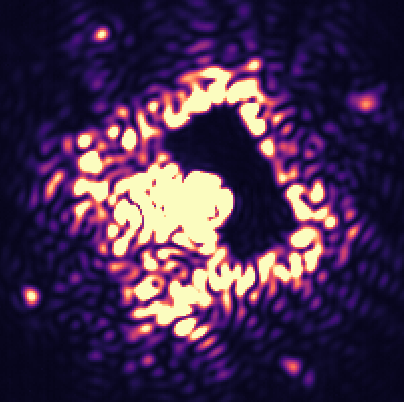

Instrumentation
I am currently involved in three major instrumentation projects, including SPIDERS (the Subaru Pathfinder Instrument for Detecting Exoplanets and Retrieving Spectra), the Gemini Planet Imager 2.0 / CAL2 upgrade, and NRC's optical aperture synthesis project.
Focal Plane Wavefront Sensing
Focal plane wavefront sensing refers to any technique that measures the electric field of light at the science focal plane. This kind of approach is critically important for the next generation of direct imaging instruments, because it allows us to measure and suppress stellar glare, also known as "speckles".
In SPIDERS, we will demonstrate the Fast Atmospheric Self-Coherent Camera Technique (Gerard et al 2019). With the FAST SCC, we turn the science camera into a interferometer. Instead of blocking starlight using a coronagraph, we redict it, filter it, and interfer it back with itself.
The upshot is that our science images become fringed anywhere light leaks past the coronagraph. Planets and disks, being incoherent with the star, remain unfringed, allowing us to instantly discriminate between planet light and starlight.
Using a deformable mirror and techniques from adaptive optics, we can use this information to perform an active correction and create a region around the star where the starlight has been dramatically suppressed—a.k.a. "digging a dark hole":
Coherent Differential Imaging
In addition to active correction, we can use the self-coherent camera to post-process our data and reveal even fainter planets. This software step can be combined with the hardware loop described above to further suppress stubborn speckles.
Fourier Transform Spectroscopy
Using spectral information to help discriminate planet light from starlight has a long history. Unfortunately, it has often not lived up to its expectations. Real data from instruments like GPI, SPHERE, and SCExAO reveals that low-resolution integral field units give datacubes with speckles that evolve considerably with wavelength.
To better understand chromaticity in high contrast instruments, to try and improve on current performance, and to combine spectroscopy with self-coherent camera, I proposed and helped to build an Imaging Fourier Transform Spectrograph (IFTS) for the SPIDERS instrument.
The SPIDERS IFTS will be capable of imaging exoplanets with a spectral resolution of over R15,000. Preliminary results show a factor of 40-50 starlight suppression may be possible using spectral differential imaging with this instrument. A collapsed cube is visible in the image below:

üêô